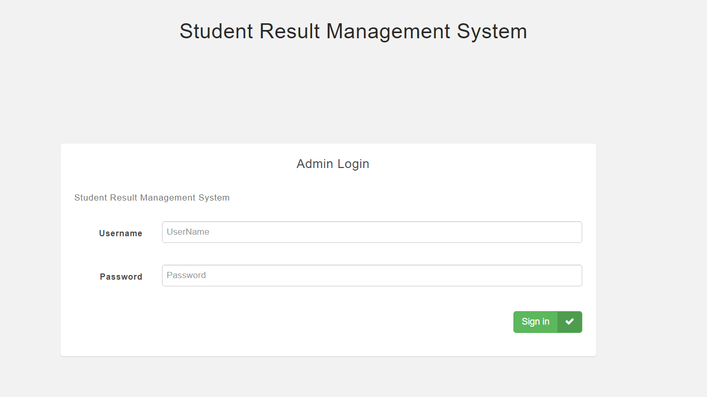

Latest Projects

Developed WriteAssistPro, an intelligent text editor designed to empower handicapped writers. Integrated speech-to-text functionality with real-time voice commands for seamless and accessible content creation. Enhanced user experience through interactive features, improving productivity and inclusivity in writing tasks.
AI Powered Text Editor With Speech to Text Conversion for Handicapped Writers

GFM Login Portal
Designed and implemented a secure portal for storing and managing student data and GFM (Guardian Faculty Member) records. The system streamlines data management, ensuring efficient access and organization of academic and mentorship information for faculty and students.